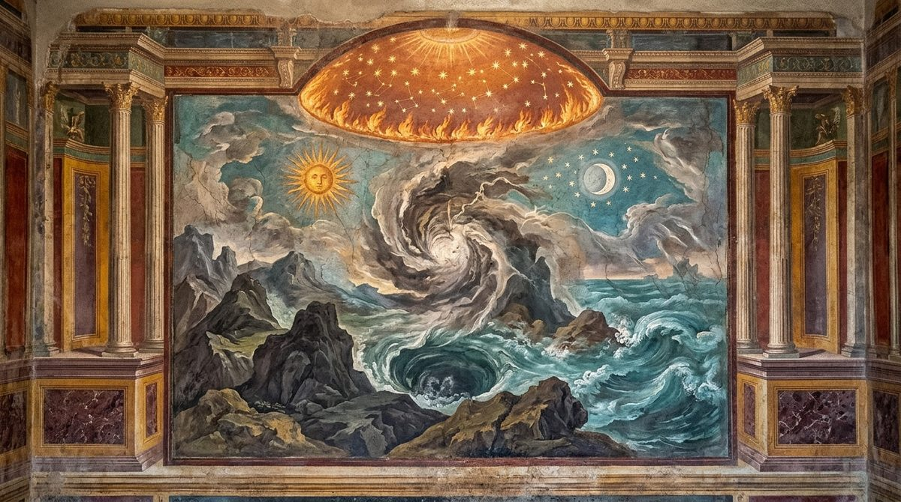
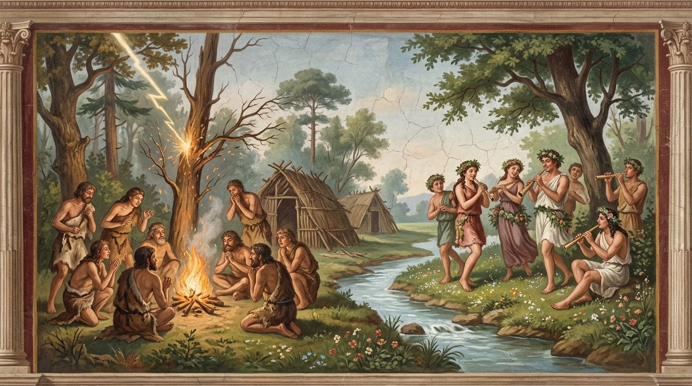

De Rerum Natura · on the nature of things
Epicurus, a god for what he found, set above Ceres, Liber and Hercules; the world was born and will die, since earth, sea, air and the fires of heaven are all spent and renewed, and no song reaches back beyond Thebes and Troy; how the world gathered itself out of the storm of first-beginnings; the motions of the stars, the size of the sun and moon, the sun's turnings, the moon's light and the eclipses, each with several causes left open; the young earth bearing plants, then animals and men, the monsters that failed and the kinds that lasted, and why Centaurs never were; the hard life of the first men; huts, fire, marriage and the first compacts; the natural origin of speech; kings, gold, law and the fear of punishment; religion born of dreams and of the sky; metals, war and its beasts, weaving, farming, song, and the arts drawn out little by little to the shores of light.
The text followed is the printed Perseus text, as in Books 1 to 4. One gap is marked and left unfilled, after 1012, so that "were known" at 1013 has lost its subject. Three lines are corrupt beyond repair and are rendered for their probable sense, 312, 679 and 839. At 53 the English follows the printed words rather than the correction most editors make, and the note gives the alternative; at 521 it follows the reading that connects the phrase with the god Summanus; at 1319 it follows the correction every editor makes. Three lines are stray repetitions, 574 of 571, 596 of 584 and 771 of 764, 1327 and 1328 are two drafts of one line, and 1341-1349 are suspected of being a later addition; all are rendered as printed, so that the files stay aligned line for line, with a note at each. As in Books 3 and 4 the transcription doubles a word wherever the original marked a diaeresis, so that "air" appears as aeraaëra, aeraër and aerisaëris at some thirty places, and suesse (912), tuta (859, printed tutaTA), coegit (1354) and poetae (1444) are doubled or garbled in the same way; these are artifacts of the copy, read as the single word without notice.
The register is that of the earlier books. Primordia are "first-beginnings" and principia "beginnings" (184, 440); elementa is "elements" both for the finer bodies of 456 and 599 and for the letters of the alphabet at 1445; templa are "precincts", of the mind at 103, of heaven at 521 and 1204, of the nymphs at 948 and of the whole turning sky at 1436; foedera are "covenants", nature's at 310 and 924 and the first men's own at 1025 and 1155. Simulacra at 75 and 308 are statues of the gods, and "images" is kept so that the word stays one word across the poem. Venus is left as a name for the goddess and for desire alike (897, 962, 1017). Ratio is "reasoning" where it means thought or doctrine and "principle" where it means the manner in which a thing comes about; at 1006 alone, where it means the skill of seafaring, it is "craft". Daedala, "artificer" when Lucretius applies it to nature (234, as at 1.7), is "artful" at 1451, where it describes the statues and not their maker. Luminis oras at 224, 781, 1389 and 1455 is "the shores of light" without "shining", since the Latin lacks dias; the full refrain is reserved for the lines that have it. Animus and anima are "mind" and "spirit", as in Book 3.
Lucretius repeats himself more in this book than in any other, and the English repeats itself wherever the Latin does. Lines 82-90 recur at 6.62-70, and 88-90 are 1.75-77 (and 1.594-596); 128-141 rework 3.784-797; 351-363 are 3.806-818; 419-421 are 1.1021-1023; 187-194 recur at 422-431; 1388-1389 return at 1454-1455 with one verb changed; and 1392-1396 rework 2.29-33, shifting from the present and "we" to the past and "they". Where the Latin varies a word, the English varies with it, and the notes say where. The book also shows most fully the Epicurean method of several causes, under which any explanation consistent with what is seen is kept open for what cannot be seen at first hand; the sections on the stars, the sun's turnings, the moon's light, the eclipses, the first fire and the discovery of metals each set out alternatives without choosing, and 526-533 state the rule.
In the right margin: what Machiavelli wrote beside these lines in his own copy, Vatican MS Ross. 884, each linked to its folio. About the margin.
1Who has the strength of heart to build a song worthy
of the majesty of things and of these discoveries?
Or who is so strong in words that he could shape praises
to match the merits of the one who left us such prizes,
5brought forth and sought out by his own heart?
No one, I think, who is made of a mortal body.
For if we must speak as the known majesty of things
itself demands, he was a god, a god1, renowned Memmius,
who first discovered that reasoning of life which
10is now called wisdom, and who by his art
took life out of such great waves and such great darkness
and set it in so calm a place and in so clear a light.
For compare the godlike discoveries of others long ago.
For Ceres is said to have established grain, and Liber2
15for mortals the liquid of the vine-born juice;
and yet life could go on without these things,
as report says some nations live even now.
But a good life was not possible without a pure heart;
so with all the more right this man seems to us a god,
20from whom even now, spread abroad through great nations,
the sweet consolations of life soothe our minds.
But if you think the deeds of Hercules3 stand above his,
you will be carried much farther from true reasoning.
For what harm to us now would that great gaping mouth
25of the Nemean lion do, or the bristling Arcadian boar?
And how much could they hinder us, the birds that haunt Stymphalus?
Finally, what could the bull of Crete do, or the plague of Lerna,
the hydra, palisaded round with venomous snakes?
Or what the triple-breasted strength of three-bodied Geryon,
30and the horses of Diomedes, breathing fire from their nostrils
in Thrace, near the Bistonian lands and Ismarus,
and, guarding the gleaming golden apples of the Hesperides,
fierce, with savage glare, the serpent of enormous body
coiled round the tree's trunk? What harm, finally, would it do
35there by the Atlantic shore and the stern stretches of the sea,
where no one of ours goes and no barbarian dares?
And the other monsters of this kind that have been destroyed,
if they had not been conquered, what harm, pray, would they do alive?
None, I think: for even now the earth swarms, to the full,
40with wild beasts, and is filled with trembling terror
through groves and great mountains and deep forests,
places which for the most part it is in our power to avoid.
But unless the heart is purged, what battles then
and dangers must work their way into us against our will!
45How great then are the sharp cares of desire that tear
a troubled man apart, and how great, too, the fears!
Or pride, filth, and wantonness, what of them? How great
the disasters they bring about! What of luxury and sloth?
Therefore the man who has subdued all these and from the mind
50driven them out with words, not arms, will it not be fitting
that this man be deemed worthy of a place among the gods?
Especially since he was wont to give, well and divinely,
many sayings from the gods to mortals themselves4
and to lay open in his words the whole nature of things.
55Treading in his footsteps, while I follow out his reasonings
and teach in my words by what covenant all things
are created, and how they must endure in it,
and cannot annul the strong laws of time,
in which kind, first of all, the nature of the mind was found
60to consist, first, of a body that had birth,
and not able to endure unharmed through long ages,
but that images are wont to deceive the mind in sleep
when we seem to see one whom life has left;
for the rest, the order of reasoning has now brought me to this,
65that I must give an account of how the world consists
of a mortal body and at the same time had a birth;
and in what ways that coming-together of matter
founded the earth, the sky, the sea, the stars, the sun,
and the globe of the moon; then what living things
70arose from the earth, and which were at no time born;
and in what way the human race, with varied speech,
began to make use, among themselves, of the names of things;
and in what ways that fear of the gods worked its way into
our hearts, that fear which over the round of the earth keeps holy
75shrines, lakes, groves, altars, and images of the gods5.
Further, the courses of the sun and the wanderings of the moon,
I shall explain by what force steering nature bends them,
so that we may not think these, between heaven and earth,
run their everlasting courses freely, of their own accord,
80obliging the growth of crops and of living things,
nor suppose they are rolled round by some reasoning of the gods.
For those who have learned well that the gods lead a life without care6,
if yet meanwhile they wonder by what principle
each thing can be carried on, above all in those things
85that are seen overhead in the shores of the ether,
are carried back again into the old religions
and take on harsh masters, whom the wretches believe
can do all things, ignorant of what can come to be
and what cannot, and how at last each thing's power is bounded,
90by what principle, and its boundary-stone set deep.
For the rest, not to keep you longer with promises,
first of all look on the seas and lands and sky;
their threefold nature7, their three bodies, Memmius,
three appearances so unlike, three such weavings,
95one day will give to destruction, and, upheld through many years,
the mass and machinery of the world will fall.
Nor does it escape my mind how new and strange a thing
befalls the mind, the coming destruction of heaven and earth,
and how hard it is for me to prove it in words;
100as happens when you bring to the ears a thing unheard of before
yet cannot put it under the sight of the eyes
nor lay it in the hands, by which the paved road of belief–fol. 86v
leads nearest to the human heart and the precincts of the mind8.
But still I will speak out. Perhaps the fact itself will give belief
105to my words, and you will see, when violent earthquakes arise,
all things shaken to pieces in a little time.
May steering fortune9 turn this far away from us,
and may reasoning rather than the event itself persuade
that all things can be overcome and fall with a dreadful crash.
110Before I approach this subject, to pour out pronouncements
more holy and with far surer reasoning than
the Pythia10, who speaks from the tripod and the laurel of Phoebus,
I shall set out for you many consolations in learned words,
so that, reined in by religion, you may not think
115that the lands and sun and sky, sea, stars, moon,
must remain eternal, being of divine body,
and so suppose it right that, like the Giants11,
all those should pay the penalty for monstrous crime
who by their reasoning shake the walls of the world
120and would put out the glorious sun of heaven,
branding immortal things with mortal speech;
although these are so very far removed from divine power
and so unworthy to be counted among the gods
that they may rather be thought to give us a notion
125of what is removed from vital motion and sense.
For indeed it cannot be that with any body whatever
the nature of the mind and judgment be thought able to exist.
Just as there can be no tree in the upper air, no clouds12
in the salt sea, nor can fish live in the fields,
130nor blood be in wood, nor sap in stones;
it is fixed and ordered where each thing grows and is:
so the nature of the mind cannot arise without the body,
alone, nor exist far off from sinews and blood.
For if it could, the force of the mind itself, much sooner,
135could be in the head or shoulders or the lowest heels,
and would be wont to be born in any part you please,
and still remain in the same man and the same vessel.
And since even in our body it is evidently fixed
and ordered, it seems, where each can be and grow,
140spirit and mind13, each apart, all the more must we deny
that, wholly outside the body and the living form,
they could endure in crumbling clods of earth or the sun's fire
or in water or the high shores of the ether.
Therefore these things do not exist endowed with divine sense,
145since they cannot be alive and quickened with the breath of life.
Again, you cannot possibly believe that the holy
dwellings of the gods exist in any parts of the world14.
For the nature of the gods is thin, and far removed
from our senses, and is scarcely seen by the thought of the mind;
150and since it slips away from the touch and stroke of hands,
it must touch nothing that is tangible to us;
for what may not itself be touched cannot touch.
Therefore their dwellings too must also be unlike
our dwellings, thin, in keeping with their bodies;
155and this I shall prove to you later in ample discourse.15
Further, to say that for the sake of men they willed to prepare
the glorious nature of the world, and that therefore
it is fitting to praise the praiseworthy work of the gods,
and to think that it will be eternal and immortal,
160and that it is sin that what, by the gods' ancient reasoning,
was founded for the races of men to last through endless age,
should ever be shaken by any force from its seat,
or harried with words and overturned from top to bottom,
and to invent and add other things of this kind, Memmius,
165is folly16. For what profit could our gratitude
bestow upon immortal and blessed beings,
that for our sake they should set about doing anything?
Or what new thing could, so long after, lure beings at peace before
to desire to change their former life?
170For it seems that one should rejoice in new things
whom the old things harm; but one who met with nothing grievous
in the time gone by, while he spent his life in beauty,
what could kindle in such a one a love of novelty?
Or what harm would it have been to us never to have been created?
175Did life, I suppose17, lie in darkness and sorrow
until the generative origin of things dawned?
For whoever has been born must want to remain
in life, so long as soft pleasure holds him;
but for one who never tasted the love of life
180and was never counted, what harm is it not to have been created?
Further, the pattern for creating things, and the very
notion18 of men, from where was it first planted in the gods,
so that they knew and saw in their mind what they wished to make,
or in what way was the power of the beginnings19 ever known,
185and what they could do with their order changed among themselves,
if nature herself did not give a likeness of creation?
For so many first-beginnings of things, in so many ways20,
driven by blows from infinite time till now,
and roused by their own weights, have been used to move
190and to meet in every way and to try out all things
that they could create by meeting with one another,
so it is no wonder if they fell into such arrangements
and have come, as well, into such courses
as those by which this sum of things is now carried on by renewal.
195But even if I did not know what the first-beginnings of things are,
this, still, from the very order of heaven I would dare
to affirm, and to show from many other things,
that by no means for us, by divine power, was prepared
the nature of things: so great the flaws it stands endowed with.
200First, of all that the vast sweep of heaven covers,
a greedy portion the mountains and the forests of wild beasts
have taken; rocks hold it, and vast marshes,
and the sea, which keeps the shores of the lands wide apart.
Then, further, nearly two parts the burning heat
205and the unceasing fall of frost take away from mortals.
What is left of plowland, even that nature by her own force
would choke with brambles, did human force not resist,
used for life's sake to groan over the strong mattock
and to cut through the earth with the plow pressed down.
210If we did not, turning the fertile clods with the plowshare
and working the soil of the earth, rouse them to birth,
of their own accord they could not come out into the clear air.
And even so, at times, when things won with great labor
are now in leaf throughout the lands and all in flower,
215either the sun in the ether scorches them with too much heat,
or sudden rains destroy them, and chill frosts,
and blasts of wind harry them with violent whirlwind.
Further, the horror-bringing race of wild beasts,
hostile to the human kind on land and sea,
220why does nature feed and increase it? Why do the seasons bring
diseases? Why does untimely death go wandering?
Then again the child, like a sailor cast up by savage waves,
lies naked on the ground, speechless, in want of every
help for life, as soon as into the shores of light21
225nature has poured him out with throes from his mother's womb,
and he fills the place with mournful wailing, as is right
for one who has so much of evil left to pass through in life.
But the various flocks grow up, and herds, and wild beasts,
and they need no rattles, nor must any of them be given
230the coaxing, broken baby-talk of a kindly nurse,
nor do they look for changing clothes to suit the weather;
finally, they need no arms, no high walls,
to guard their own, since for all of them all things abundantly
the earth herself brings forth, and nature, artificer of things22.
235First, since the body of the earth, and moisture,
and the light breaths of air, and the hot vapors,
of which this sum of things is seen to consist,
all consist of a body that is born and mortal,
the whole nature of the world must be thought to be of the same.
240For indeed, things whose parts and members we see
to be of a body that is born and of mortal shapes,
these same we see to be, as a rule, mortal
and born as well. Therefore, since I see the greatest
members and parts of the world consumed and born again,
245we may know that heaven too, and likewise earth, have had
some time of beginning, and will have their destruction.
In these matters, do not think that I have taken too much
for granted23, in assuming earth and fire to be mortal,
and in not doubting that moisture and the airs perish,
250and in saying that the same are born and grow again.
First, no small part of the earth, scorched through
by constant suns, beaten by the force of many feet,
breathes out a haze of dust and flying clouds,
which strong winds scatter through all the air.
255Part of the clods too is called back to flood
by rains, and rivers graze and gnaw their banks.
Further, whatever feeds and increases another, in its share
is given back; and since beyond doubt it is seen
that the mother of all is also the common tomb24 of things,
260therefore the earth, you see, is drawn upon and, increased, grows back.
For the rest, that the sea, the rivers, the springs always brim
with new moisture, and that the waters flow without end,
there is no need of words: the great downrush of waters
declares it everywhere. But all the water that comes first
265is taken off, and so, in the sum, the moisture never overflows,
partly because the strong winds sweeping the levels of the sea
diminish it, and the sun in the ether, unweaving with rays,
partly because it is spread out beneath, through all the lands;
for the brine is strained out, and the matter of moisture
270oozes back, and all of it gathers at the heads of the rivers,
and from there flows over the lands in a column of sweet water
where the way, once cut, has carried the waves down with liquid foot.
Now therefore I shall speak of air, which in its whole body
is changed in numberless ways with every single hour.
275For always whatever flows off from things, all of it
is carried into the great sea of air; and unless air in turn
gave bodies back to things and renewed them as they flow,
all things would by now have been dissolved and turned to air.
Air therefore never ceases to be born from things and to fall
280back into things, since it is certain that all things constantly flow.
So too the bounteous fount of liquid light, the sun in the ether,
floods the sky constantly with fresh brightness
and at once supplies light with new light.
For whatever brightness comes first is lost to it,
285wherever it falls. You may learn this from the fact
that as soon as clouds begin to pass beneath the sun
and, as it were, to break apart the rays of light,
at once the lower part of those rays is all lost
and the earth is shadowed wherever the storm clouds are carried;
290so that you may know things always need new brilliance,
and each first cast of brightness perishes,
and that in no other way can things be seen in the sun
unless the very fountainhead of light supplied it without end.
Indeed, even the lights of night, the lights that are of the earth,
295hanging lamps, and torches bright with flashing
flares and rich with much murky smoke,
hurry by a like principle, with heat as their servant,
to supply new light; they press on to flicker with fire,
press on, and the light leaves no place as if broken between:
300so hurriedly is its destruction, from all its fires,
hastened on by the swift birth of flame.
So therefore we must think that sun and moon and stars
cast out their light from one fresh rising after another
and always lose whatever flames come first,
305so that you may not perhaps believe these thrive inviolable.
Again, do you not see that even stones are conquered by age,
that high towers fall and rocks crumble,
that the gods' shrines and images grow weary and crack,
and the holy divinity cannot push forward the bounds
310of fate, nor struggle against nature's covenants25?
Again, do we not see the monuments of men fall in ruin,
asking, in their turn, whether you believe that they too grow old,26
and flints torn from the high mountains rushing down,
unable to bear and endure the strong forces of an age
315that is finite? For they would not fall, torn suddenly away,
if from infinite time they had borne up against
all the torments of age without breaking.
Again, look now at this whole, which round and above
holds the earth in its embrace: if it creates from itself
320all things, as some relate, and takes them back when they perish,
the whole consists of a body that is born and mortal.–fol. 90r
For whatever increases and feeds other things from itself
must be diminished, and renewed when it takes things back.
Further, if there was no generative beginning
325of earth and heaven, and they have always been eternal,
why, beyond the Theban war27 and the deaths of Troy,
have not other poets also sung of other things?
Where have so many deeds of men so often fallen, and nowhere
flower, grafted on the eternal monuments of fame?
330But, as I think, the whole is new, and the nature
of the world is recent, and not long ago took its beginnings.
And so even now some arts are being polished,
even now are growing; now much has been added
to ships; lately players have given birth to melodious sounds;
335finally, this nature of things and its reasoning were found
only lately, and I myself am now found the very first28
who can turn it into the speech of my fathers.
But if perhaps you believe that all these same things were before,
but that the generations of men perished in burning heat,
340or cities fell in some great upheaval of the world,
or that after constant rains ravening rivers
went out across the lands and buried the towns,
all the more must you, conquered, confess
that destruction of earth and heaven too will come;
345for when things were assailed by such diseases and such
dangers, then, if a grimmer cause had pressed upon them,
they would have spread disaster and great ruin far and wide.
Nor in any other way do we seem to be mortal,
among ourselves, save that we sicken with the same diseases
350as those whom nature has removed from life.
Further, whatever things endure eternal must, of necessity,29
either, because they are of solid body, repel blows
and suffer nothing to enter them that could tear apart
their close-knit parts within, as the bodies of matter
355are, whose nature we have shown before;
or be able to last through all time for this reason,
that they are exempt from blows, as the void is,
which stays untouched and is not affected one whit by a stroke;
or else because there is no supply of place around them
360into which things could, as it were, part and be dissolved,
as the sum of sums is eternal, nor is there outside it
any place into which they might scatter, nor are there bodies that
could fall upon them and dissolve them with a strong blow.
But neither, as I have taught, is the nature of the world
365of solid body, since void is mixed in things,
nor yet is it like the void; nor indeed are bodies lacking
that might perhaps gather together out of the infinite
and overthrow this sum of things with a violent whirlwind
or bring upon it some other disaster of danger,
370nor further is the nature of place and the space of the deep
lacking, into which the walls of the world could be scattered,
or, driven by any other force, perish.
The door of death, therefore, is not shut to the sky,
nor to sun and earth, nor to the deep waters of the sea,
375but stands open and looks toward them with its vast and monstrous gape.
Therefore you must confess that these same things
were born; for things that are of mortal body
could not, from infinite time until now,
have scorned the strong forces of immeasurable age.
380Finally, since the greatest members of the world
fight so among themselves, stirred by a war in no way holy30,
do you not see that some end of their long contest
can be granted them, as when the sun and all heat
have drunk up all the moisture and prevailed?
385This they strive to do, and have not yet carried out their attempt;
so much do the rivers supply, and they threaten besides
to flood all things from the deep gulf of the sea:
in vain, since the winds that sweep the levels of the sea
diminish it, and the sun in the ether, unweaving with rays,
390and they trust that they can dry all things up
before the water can reach the end of its undertaking.
Breathing such war in an equal contest,
they strive to settle great matters between them,
though once, meanwhile, fire has been the stronger,
395and once, as the story goes31, water reigned over the fields.
For fire prevailed and, ranging around, burned up much,
when the ravening force of the sun's horses swept Phaethon32
off the road through the whole ether and over all the lands.
But the father almighty, roused then with bitter anger,
400with a sudden stroke of the thunderbolt dashed great-hearted
Phaethon from the horses to the earth, and the Sun, meeting him
as he fell, caught up the eternal lamp of the world,
and brought back the scattered horses and yoked them, trembling,
then, steering them on their own road, restored all things,
405as, to be sure, the old poets of the Greeks have sung.
But this is driven very far away from true reasoning.
For fire can prevail when more bodies of matter
have risen up out of the infinite;
then its forces fall, overcome by some principle,
410or else things perish, burned up by the scorching air.
Water likewise once rose up and began to prevail,
as report says, when it drowned the lives of men in its waves;
then, when that force was turned aside by some principle and withdrew,
whatever of it had risen up out of the infinite,
415the rains stopped and the rivers lessened their force.

But by what means that gathering of matter
founded the earth and the sky and the depths of the sea,
the courses of the sun and the moon, I shall set out in order.
For certainly the first-beginnings of things did not by design33
420set themselves each in its order with a shrewd mind,
nor, surely, did they bargain what motions each should give;
but because many first-beginnings of things in many ways,
driven by blows from infinite time till now,
and roused by their own weights, have been used to move
425and to meet in every way and to try out all things
that they could create by meeting with one another,
therefore it comes about that, spread abroad through a great age,
by trying every kind of union and motion
at last those come together which, suddenly thrown together,
430often become the origins of great things,
of earth and sea and sky and the race of living things.
At that time neither could the sun's wheel be seen with its ample light
flying on high, nor the stars of the great world,
nor sea nor sky nor, finally, earth nor air,
435nor could anything be seen like the things we know,
but a kind of strange storm and a mass, risen up.
Then parts began to fly apart from one another, and like things
to join with like, and to mark off the world,
and to divide its members and arrange its great parts
440out of beginnings of every kind, whose discord confounded
intervals, paths, connections, weights, blows,
collisions, motions, stirring up battles among them
because of their unlike forms and varied shapes,
since not all, joined thus, could stay together
445nor give one another fitting motions:
that is, to separate the high sky from the earth,
and the sea apart, to spread with its moisture set apart,
and apart too the fires of the pure and separate ether.
For indeed, first, all the bodies of earth,
450because they were heavy and entangled, came together
in the middle and all took the lowest seats;
and the more, entangled, they came together among themselves,
the more they squeezed out those which would make the sea, the stars, the sun
and the moon and the walls of the great world;
455for all these are made more of smooth and round
seeds and of much smaller elements34
than the earth is. And so through the open pores of the earth,
breaking out in parts, the ether first lifted itself up,
fire-bearing, and being light carried off many fires with it,
460in a way not far different from what we often see
when first, golden, through the grasses jeweled with dew,
the morning lights of the rayed sun grow red,
and the lakes and the ever-flowing rivers breathe out mist,
and as at times the earth itself is seen to smoke;
465and when all these are gathered together above, on high,
their body thickened, they weave clouds beneath the sky.
So then at that time the light and spreading ether,
its body thickened, set round on every side, fenced itself in,
and spread out wide into all parts on every side,
470so fenced in all other things in its greedy embrace.
After it followed the origins of the sun and moon,
whose globes turn in the air between the two;
these neither the earth nor the greatest ether claimed for itself,
because they were neither so heavy that they settled, pressed down,
475nor so light that they could glide along the highest shores,
and yet they are so placed between the two that they turn their living
bodies round and stand out as parts of the whole world;
just as in us some limbs may remain
at rest, even while there are others that move.
480So then, these things withdrawn, the earth suddenly,
where now the vast blue tract of sea stretches out,
sank down and flooded its hollows with salt surge.
And day by day, the more the ether's heat all around
and the rays of the sun compressed the earth on every side
485with frequent blows on its outer edges, packed tight,
so that, driven in, it came together dense at its own center,
the more the salt sweat squeezed from its body
swelled the sea and the swimming plains by oozing,
and the more did those slip out and fly away,
490many bodies of heat and air, and thicken the high
shining precincts of heaven far from the earth.
The plains sank down; the slopes of the high mountains
rose up; for the rocks could not subside
nor all parts sink down equally to the same degree.
495So therefore the weight of earth, its body packed close,
settled, and heavy, like the slime of the whole world, to the depths
flowed together, and sank down to the bottom like dregs;
then the sea, then the air, then the fire-bearing ether itself
were all left pure, with their clear-flowing bodies,Hfol. 93v
500some lighter than others; and the ether, most clear-flowing
and lightest of all, flows on above the breezes of the air
and does not mingle its clear-flowing body with the troubled breezes
of the air; it lets all these below be turned by violent
whirlwinds, lets them riot in fitful storms,
505while it glides, bearing its own fires with a steady drive.
For that the ether can flow evenly, with a single effort,
the Pontus35 shows, a sea that flows with a steady current,
keeping always one unvarying course in its gliding.
Now let us sing what is the cause of the motions of the stars.
510First, if the great sphere of heaven turns round,
we must say that air presses on the pole at either end
and holds it from outside and closes it in on both sides;
then that another air flows above and strains the same way
in which the stars of the eternal world glitter as they roll;
515or that another beneath carries the sphere up the other way,
as we see rivers turn wheels and their water-buckets.
It is also possible that the whole of heaven stays
at rest, while yet the shining signs are carried on,
either because swift tides of ether are shut within
520and, seeking a way out, turn round and round, and roll the fires
everywhere through the nightly precincts36 of heaven,
or because air flowing from somewhere else, from outside,
turns and drives the fires, or they can creep of themselves
wherever each one's food calls them and invites them on,
525feeding their flaming bodies everywhere through the sky.
For which of these it is in this world is hard to lay down37
for certain; but what can happen and does happen through the whole
in various worlds created on various principles,
that I teach, and go on to set out several causes
530which can account, through the whole, for the motions of the stars;
and yet one of these must be the cause here too
that quickens the motion of the signs; but which of them it is
to lay down is not at all for one who advances step by step.
And for the earth to rest in the middle region of the world,
535its weight must gradually thin out and grow less,
and it must have another nature beneath it,
joined to it from the start of its life and fitted into one
with the airy parts of the world, set in which it lives.
Therefore it is no burden and does not press the breezes down,
540just as to each man his own limbs have no weight,
nor the head a burden to the neck, nor, finally, do we feel
the whole weight of the body resting on the feet;
but whatever weights come from outside and are laid
upon us harm us, though often they are far smaller.
545So much it matters what power each thing has.
So therefore the earth is not something foreign, suddenly
brought in and set from elsewhere in foreign air,
but conceived with it from the first origin of the world,
and a fixed part of it, as our limbs are seen to be of us.
550Further, the earth, shaken suddenly by a great thunderclap,
shakes with its motion all things that are above it;
which it could by no means do unless it were
bound fast to the airy parts of the world and to heaven;
for they cling to each other by common roots,
555joined from the start of their life and grown into one.
Do you not see too how great a weight of body
the thinnest force of the spirit sustains for us,
because it is so joined and fitted into one with it?
Finally, what can lift the body in a nimble leap
560except the force of the spirit, which steers the limbs?
Now do you see how much a thin nature can avail
when it is joined with a heavy body, as the air
is joined to the earth, and the force of the mind to us?
Nor can the sun's wheel be much greater, nor its blaze less,
565than it seems to our senses to be.
For from whatever distances fires can cast their light
upon us and breathe warm heat upon our limbs,
the great intervals take nothing from the body
of the flames; the fire is no narrower to the sight.
570And so, since the heat of the sun and its outpoured light
reach our senses and make places shine,
the form and size of the sun too must appear from here as they are,
so that you could truly make it neither more nor less.
reach our senses and make places shine,38
575And the moon, whether it moves lighting places with bastard light39,
or casts its own light from its own body,
whatever it is, it moves with a shape no larger
than it seems to be, as we perceive it with our eyes.
For all things that we look on far removed
580through much air are seen confused in appearance
before their outline shrinks. Therefore the moon,
since it presents a clear appearance and a definite shape,
just as it is marked out at its outermost edges,
must look from here, on high, just as large as it is.
585Lastly, whatever fires of the ether you see from here,
you may know that they can be smaller by very little
or larger by some small and slight part,
since whatever fires we perceive on earth,
as long as their flicker, as long as their clear blaze is seen,
590seem now and then to change their size very little
one way or the other, the farther off they are.
Again this is not to be wondered at, by what principle
so small a sun can send out so much light
as to fill the seas and all the lands and heaven, watering them,
595and drench all things through with its warm heat.
must look from here, on high, just as large as it is.
For it may be that from here one fountain of the whole world,
opened wide, gushes in abundance and bursts out in light,
because from all the world the elements of heat
600gather from every side, and their throng so
flows together that this blaze streams out from a single head.
Do you not see too how widely a small spring of water
sometimes waters the meadows and floods over the plains?
It is also possible that from the sun's fire, though not great,
605the blaze may take hold of the air with burning heats,
if by chance the air is so suited and so fit
that it can be kindled when struck by small heats;
just as we sometimes see crops and stubble
catch fire everywhere from a single spark.
610Perhaps too the sun, shining on high with its rosy lamp,
may possess much fire, in hidden heats,
around itself, a fire marked by no brightness at all,
so that, heat-bearing, it may swell so great a stroke of rays.
Nor does the order of the sun lie open, simple and straight:
615how, from its summer regions, it comes to Capricorn40's
winter turnings, and how, turning back from there,
it bends toward the solstice goal-posts of Cancer,
and how the moon is seen to pass in a month through that space
in which the sun spends the time of a year in its course.
620Not one simple cause, I say, is given for these things.
For it seems that this, above all, can come about,
what the holy judgment of the man Democritus41 lays down:
that the nearer to the earth each of the stars is,
the less it can be carried with the whirl of heaven;
625for the swift and fierce forces of that whirl fade away
and lessen down below, and so the sun
is little by little left behind with the hinder signs,
because it is far lower than the burning signs.
And the moon still more: the lower its course,
630the farther it is from the sky and the nearer to the earth,
the less it can keep its course level with the signs.
Further, the more sluggish the whirl that carries it,
being lower than the sun, the more do all the signs
overtake it all around and are carried past it.
635So it comes about that it seems to return to each sign
more quickly, because the signs come back to it.
It may also be that from the cross regions of the world an air
can flow at a fixed time, by turns, now one, now the other,
one able to thrust the sun out of the summer signs
640as far as the winter turnings and their freezing stiffness,
and one to fling it back from the freezing shades of cold
as far as the heat-bearing parts and the burning signs.
And on a like principle we must suppose that the moon and stars,
which roll great years round in great orbits,
645can travel by airs from alternate parts.
Do you not see that the clouds, too, under contrary winds,
go in contrary directions, the lower against the upper?
Why should those stars be less able, through the great orbits of ether,
to be carried on currents contrary to one another?
650But night buries the lands in huge darkness,
either when the sun, after its long course, has struck the farthest
parts of heaven and, grown faint, has breathed out its fires,
shaken by the journey and weakened by much air,
or because the same force compels it to turn its course beneath
655the earth, the force that carried its orb above the lands.
Likewise at a fixed time Matuta42 spreads rosy dawn
through the regions of the ether and opens wide the light,
either because the same sun, returning beneath the earth,
seizes the sky beforehand, trying to kindle it with its rays,
660or because fires come together and many seeds
of heat have been accustomed to flow together at a fixed time,
which cause the sun's light to be born always new;
just as, the story goes, from the high mountains of Ida43
scattered fires are seen at the rising of the light,
665and then gather as if into a single ball and make an orb.
Nor yet should this be a thing to wonder at
in these matters, that these seeds of fire can at so fixed a time
flow together and restore the brightness of the sun.
For we see many things that come about at a fixed time
670in every kind of thing. At a fixed time they blossom,
the trees, and at a fixed time they let their flower fall.
No less does age command the teeth to fall at a fixed
time, and the beardless boy to grow his soft clothing of down,
and alike to let a soft beard hang down from his cheeks.
675Finally thunderbolts, snow, rains, clouds, winds
come about at seasons of the year not too uncertain.
For since the first starting-points of causes were thus,
and things fell out so from the first origin of the world,
in sequence44 they come back now, too, in a fixed order.
680Likewise the days may lengthen and the nights waste away,
and the daylight lessen, when the nights take increase,
either because the same sun, running beneath the earth and above
in unequal arcs, parts the regions of the ether
and divides its orbit into parts that are not equal,
685and what it has taken from the one side it restores,
carried round so much the more, to the opposite side,
until it reaches that sign of heaven where the node45
of the year makes the shades of night equal with the light;
for midway in its course between the blasts of north wind and south
690heaven holds its turning-posts apart at an equal distance
because of the position of the whole sign-bearing circle,
in which the sun, creeping, encloses its yearly times,
lighting earth and heaven with slanting light,
as the reasoning of those declares who have marked out
695all the regions of heaven, adorned with their signs set in order.
Or because the air is thicker in certain parts,
and so beneath the earth the trembling beam of fire hesitates
and cannot easily pass through and come up to its rising;
therefore in wintertime the nights, being long,
700linger, until the rayed badge of day arrives.
Or else, because in this way, in alternate parts of the year,
the fires have been wont to flow together slower and quicker,
the fires which make the sun rise from a fixed quarter,
therefore it comes about that they seem to speak the truth46.
705The moon may shine because it is struck by the sun's rays,
and turn that light day by day more toward us
into view, the farther it withdraws from the sun's orb,
until, opposite the sun, it has shone with full light
and, rising, has looked down on the sun's setting from the heights;
710then little by little, backward, as it were, it must hide
its light in turn, the closer it now glides to the sun's fire
from the other side of the signs, through its orbit;
so hold those who picture the moon to be like
a ball, and to keep the path of its course beneath the sun.
715There is reason, too, why it could roll on with its own light
and still give back varied forms of brightness;
for there may be another body, carried along and gliding
with it, in every way meeting and obstructing it,
yet unable to be seen, since it moves bare of light.
720Or it may turn, like, perhaps, the globe of a ball
dyed on one half of it with shining light,
and, by turning the globe, give out changing forms,
until it turns that part, whichever is endowed with fires,
into our view and toward our open eyes;
725then little by little it twists back and takes away
the light-bearing part of the globed mass, the ball;
as the Babylonian doctrine of the Chaldaeans47, refuting
the art of the astronomers, strives to prove the contrary,
just as if what each side fights for could not come about,
730or there were less reason why you should dare embrace this than that.
Finally, why a new moon could not always be created
in a fixed order of forms and with fixed shapes,
and each day each one, once created, perish,
and another be restored in its part and place,
735is hard to teach by reasoning and to prove with words,
since you see so many things created in so fixed an order.
Spring goes on her way, and Venus, and Venus's winged herald48
steps on before them; and close upon Zephyr's footprints
mother Flora, strewing all the way before them,
740fills everything with surpassing colors and scents.
Next in their place follows parching Heat, and with it as companion
dusty Ceres and the etesian blasts of the north winds.
Then Autumn comes on, and with it steps Euhius Euan.
Then other seasons and winds follow,
745high-thundering Volturnus and the South Wind strong with lightning.
At last Midwinter brings snows and gives back numbing
stiffness. Winter follows her, teeth chattering with cold.
So it is less to be wondered at if at a fixed time the moon
is born and at a fixed time is blotted out again,
750since so many things can come about at so fixed a time.
So too the eclipses of the sun and the hidings of the moon
you must suppose can come about from many causes.
For why should the moon be able to shut the earth off from the sun's
light, and block off the sun's high head from the lands,
755throwing its blind orb in the way of the burning rays,
and yet it be thought that at that same time some other body
cannot do this, one that glides on forever void of light?
And why could the sun not, growing faint, let go its fires
at a fixed time, and then renew its light,
760when it has passed through regions of air hostile to its flames,
which cause its fires to be quenched and to perish?
And why should the earth be able in its turn to rob the moon
of light, and itself, above, keep the sun pressed down,
while monthly the moon glides through the cone49's rigid shadows,
765and yet at that same time some other body be unable
to run beneath the moon or to glide above the orb of the sun,
breaking off its rays and the light poured out?
And yet, if the moon shines with her own brightness,
why could she not grow faint in a fixed part of the world
770while she passes through places hostile to her own light?
while monthly the moon glides through the cone's rigid shadows.50
For the rest, since I have unfolded, through the blue of the great world,
by what principle each thing could come about,
so that of the sun's varied courses and the journeys of the moon
775we might be able to know what force and cause set them moving,
and in what way they could go out when their light was blocked
and draw darkness over the lands that suspect nothing,
when they close their eyes, as it were, and with light opened again
look over all places, clear in shining light,
780now I return to the world's youth and the soft fields
of earth, what with new offspring they first resolved51 to lift
into the shores of light and entrust to the uncertain winds.
First the earth gave forth the race of grasses and their green brightness
around the hills and over all the plains;
785the flowering meadows shone with greening color,
and to the trees of every kind was then given, through the air,
a great contest of growing, with the reins let loose.
As feathers and hairs and bristles are first produced
on the limbs of four-footed beasts and the bodies of the strong-winged,
790so then the new earth first raised up grasses and young shrubs,
and after that created the mortal generations,
many, in many ways, arisen by varied principle.
For neither can living creatures have fallen from heaven,
nor can creatures of the land have come up out of the salt pools.
795It remains that deservedly the name of mother has been won
by the earth, since from the earth all things have been created.
And even now many living creatures rise out of the earth,
formed by the rains and the warm heat of the sun;
so it is less a wonder if at that time more arose,
800and larger, grown up while the earth and the ether were new.
To begin with, the race of fowl and the various birds
would leave their eggs, hatched out in the springtime,
as now in summer the cicadas leave their smooth husks
of their own accord, seeking livelihood and life.
805Then, you must know, the earth first gave forth the mortal generations.
For much heat and moisture abounded in the fields.
So wherever a fitting region of ground was offered,
wombs would grow, fastened to the earth by roots;
and when in ripe season these had been opened by the age
810of the infants, fleeing the moisture and seeking out the air,
nature turned the pores of the earth toward them there
and made it pour from its opened veins a juice
like milk, just as now every woman,
when she has given birth, is filled with sweet milk, because all
815that onrush of nourishment is turned into the breasts.
To the children the earth gave food, the warmth clothing, the grass a bed
that abounded in down, thick and soft.
But the youth of the world stirred up neither hard cold
nor excessive heat nor winds of great strength.
820For all things grow and gain their strength together.
Therefore again and again the name of mother she has won
the earth keeps deservedly, since she herself created the human
race, and at almost a fixed time poured forth every animal
that runs wild here and there across the great mountains,
825and with them the birds of the air in their varied forms.
But since she must have some end to her bearing,
she ceased, like a woman worn out by long age.
For age changes the nature of the whole world,52
and one state after another must take over all things,
830nor does anything stay like itself: all things move on,
nature alters all things and compels them to turn.
For one thing rots and grows faint, weakened by age,
then another grows up and comes out from being held in scorn.
So therefore age changes the nature of the whole world,
835and one state succeeds another and takes the earth over,
so it cannot bear what it could, and can what it did not before.
And many monsters, too, the earth then tried
to create, arising with wondrous faces and limbs:
the androgyne53, between the two and neither, far from either,
840some bereft of feet, others in turn widowed of hands,
some found dumb, without a mouth, some blind, without a face,
some bound fast by the clinging of their limbs all through the body,
so that they could neither do anything nor go anywhere
nor avoid harm nor take what their need would require.
845Other monsters and portents of this kind she created,
in vain, since nature frightened off their growth54,
and they could not reach the longed-for flower of age
nor find food nor be joined through the works of Venus.
For we see that many things must come together for living things
850so that by breeding they can hammer out their generations:
first, that there be food; then a way by which generative
seeds can flow out through the frame when the limbs are loosed;
and, so that female can be joined with male, to have
the parts by which both may exchange joys with one another.
855And many generations of living things must then have perished
and been unable by breeding to hammer out their offspring.
For whatever you see feeding on the breath of life,
either cunning or courage or else mobility
has kept that race safe from the beginning of its life.
860And many, commended to us by their own usefulness,
remain, handed over to our protection.
First, the fierce race of lions and the savage generations
courage has protected, the fox its cunning, and flight the deer.
But the light-sleeping hearts of dogs, with their loyal breast,
865and every kind that is born of the seed of beasts of burden,
and the wool-bearing flocks together with the horned generations,
all are handed over to the protection of men, Memmius;
for they eagerly fled the wild beasts and sought out peace
and plentiful fodder got without their own labor,
870which we give them as reward for their usefulness.
But those to whom nature granted none of these, so that neither
could they live by themselves of their own accord nor give us
any usefulness for which we might allow their kind
to feed under our protection and be safe,
875these, you may be sure, lay as prey and profit for others,
all of them hampered by their own fated chains,
until nature brought that race down to destruction.
But neither were there ever Centaurs55, nor at any time
can there be creatures of double nature and twofold body
880made up of limbs from alien stocks, whose powers
on this side and on that could be matched closely enough.
This you may come to know from what follows, however dull your heart.
To begin with, when three years have come round, the horse
flowers in vigor, the boy not at all; for often even then
885he will seek in his sleep the milk-giving teats of the breast.
Later, when in old age the horse's strong powers
and limbs fail, grown languid as life flees from them,
then at last, for the boy in the flower of his age, youth
comes on and clothes his cheeks with a soft down;
890so that you need not believe that from man and the seed
of draft horses Centaurs can be formed or can exist,
or Scyllas, their bodies half of the sea, girdled
with ravening dogs, and the rest of their kind
whose limbs we see to be at odds with one another;
895for these neither come to flower together nor take on strength
in their bodies nor throw it off in old age,
nor burn with a like Venus56, nor agree in one manner
of life, nor are the same things pleasant through their frames.
For indeed you may see bearded flocks often grow fat
900on hemlock, which to a man is a bitter poison.
And since flame is indeed accustomed to scorch and burn
the tawny bodies of lions just as much as every kind
of flesh and blood that exists anywhere on earth,
how could it come about that, one in a triple body,
905lion in front, snake behind, herself the middle57, the Chimaera
breathed out from her body through her mouth a bitter flame?
Therefore whoever imagines that, the earth new and the sky
fresh, such living creatures could have been begotten,
leaning on this one empty name of newness,–fol. 100v
910may babble out many things by a like principle:
let him say that then rivers of gold flowed
everywhere through the lands, and trees used to flower with jewels,
or that a man was born with such a sweep of limbs
that he could plant his steps across the deep seas
915and with his hands turn the whole heaven round about him.
For though there were many seeds of things in the earth
at the time when the earth first poured forth living creatures,
still there is no sign that mixed beasts could be created
and the limbs of living things joined together,
920because the kinds of herbs and crops and glad trees
that even now abound from the earth
still cannot be created intertwined with one another,
but each thing proceeds after its own fashion, and all
keep their distinctions by nature's fixed covenant.
925And the human race in the fields then was much
harder, as was fitting, since the hard earth had created it,
and built on bigger and more solid bones within,
fastened through the flesh with strong sinews,
not easily overcome by heat or by cold
930or by strange food or by any flaw of the body.
And through many cycles of the sun rolling across the sky
they led their lives in the roaming manner of wild beasts.
Nor was there any sturdy steersman of the curved plough,
nor did anyone know how to work the fields with iron
935or to dig young shoots into the earth, or from tall
trees to cut away the old branches with pruning-hooks.
What sun and rains had given, what the earth had created
of her own accord, that gift was enough to content their hearts.–fol. 101r
Among the acorn-bearing oaks they tended their bodies
940for the most part; and those which now in winter time you see,
the arbute58 berries, ripening to a scarlet color,
the earth then bore in great plenty, and larger still.
And besides, the flowering newness of the world then
bore many coarse foods, ample for wretched mortals.
945But rivers and springs called them to slake their thirst,
as now the downrush of water from the great mountains
summons far and wide, loud and clear, the thirsting races of wild beasts.
Finally, as they wandered they dwelt in the woodland precincts
of the nymphs, known to them, from which they knew that running streams
950of water washed with ample flood the wet rocks59,
the wet rocks, dripping down over the green moss,
and in part welled up and burst out over the level plain.
Nor yet did they know how to work things with fire, nor to use
skins and clothe their bodies in the spoils of wild beasts,
955but they lived in groves and mountain hollows and forests,
and hid their rough limbs among the brushwood
when driven to escape the lash of winds and rains.
Nor could they look to a common good, nor did they know
how to use any customs or laws among themselves.
960Whatever prey fortune had offered to each, he carried off,
each taught to be strong and to live for himself of his own accord.
And Venus joined the bodies of lovers in the woods;
for each woman was won either by mutual desire
or by the man's violent force and urgent lust
965or by a price, acorns and arbute berries or choice pears.
And trusting in the wondrous power of their hands and feet
they hunted down the woodland races of wild beasts
with stones for missiles and the great weight of the club;
many they overcame, a few they shunned in hiding places;
970and like bristly boars they gave their woodland limbs
naked to the earth when overtaken by the night,
rolling themselves round in leaves and foliage.
Nor did they seek the day and the sun with loud laments,
wandering in terror through the fields in the shadows of night,
975but silent and buried in sleep they waited
until the sun with rosy torch brought light into the sky.
For since from childhood they had been used to seeing always
darkness and light begotten in alternate times,
it could not be that they should ever wonder
980or mistrust, fearing that eternal night would hold the earth
forever, the light of the sun withdrawn.
But this was more their care, that the races of wild beasts
often made rest dangerous for the wretched men.
Driven from home, they fled their rocky shelters
985at the coming of a foaming boar or a strong lion,
and in the dead of night, in terror, they gave up
to savage guests their beds strewn with leaves.
Nor then, much more than now, did the generations of mortals
leave the sweet light of life with lamentation.
990For then each one of them, more often caught,
offered living food to wild beasts, swallowed by their teeth,
and filled the groves and mountains and forests with groaning
as he saw his living flesh buried in a living tomb.
But those whom flight had saved, with body half-eaten,
995afterward, holding trembling palms over foul sores,
called on Orcus with horrifying cries,
until savage gripings60 had robbed them of life,
without help, not knowing what their wounds required.
But many thousands of men led beneath the standards
1000a single day did not give to destruction, nor did the stormy
levels of the sea dash ships and men upon the rocks.
For the sea, rising often at random, to no purpose, in vain,
would rage, and lightly lay aside its empty threats,
nor could the allure of the calm sea, sly as it is,
1005lure anyone into ruin with its laughing waves.
Then the wicked craft61 of sailing lay unseen in darkness.
Then, again, lack of food gave their failing limbs
to death; now, on the contrary, abundance drowns them.
They in their ignorance often poured out poison
1010for themselves; now, with more skill, they give it to others.
Then, after they had got huts and skins and fire,
and woman, joined to man, withdrew into one home,
[lacuna]
were known62, and they saw offspring created from themselves,
then first the human race began to soften.
1015For fire saw to it that their shivering bodies
could not so well now bear the cold beneath the cover of heaven,
and Venus lessened their strength, and children, with their coaxing,
easily broke the proud temper of their parents.
Then too, eager, they began to join in friendship,
1020neighbor with neighbor, neither to do harm nor suffer violence,
and commended to one another children and womankind,
when with cries and gestures they signified, stammering,
that it is right for all to have pity on the weak.
And yet concord could not be brought about in every way,
1025but a good and great part kept their covenants faithfully63;
or else the human race would even then have been wholly destroyed,
nor could its offspring have carried the generations on to now.
But the various sounds of the tongue nature drove men
to utter, and need pressed out the names of things,
1030by a principle not far other than that by which
the tongue's own infancy seems to draw children on to gesture,
when it makes them point with a finger at things that are present.
For each creature feels its own power, what it can use.
The calf, before its horns are born and stand out from its brow,
1035butts with them when angry and presses on in hostility.
But the cubs of panthers and the whelps of lions
fight back with claws and feet and biting even then,
when their teeth and claws are scarcely yet formed.
Again, we see the whole race of birds trust
1040their wings, and seek a trembling help from their feathers.
Therefore to think that someone then distributed names64
to things, and that from him men learned their first words,
is folly. For why could this one man mark all things
with words and utter the various sounds of the tongue,
1045and others at the same time be thought unable to do it?
Further, if others too had not used words
among themselves, from where was the notion of their use
implanted, and from where was this man first given the power
to know and see in his mind what he wished to do?
1050Likewise one man could not compel many, conquer and tame them,
so that they would wish to learn the names of things thoroughly.
Nor is it easy in any way to teach and persuade the deaf
what needs to be done; for they would not suffer it,
nor in any way would they bear for long
1055unheard-of sounds of voice to batter their ears in vain.
Finally, what is there so very wonderful in this matter,
if the human race, with voice and tongue in vigor,
marked things with varied sound according to varied feeling,
when dumb cattle, when even the generations of wild beasts
1060are used to calling out unlike and various sounds
when there is fear or pain, and when their joys are swelling?
For indeed this can be learned from plain facts.
When first the great soft jowls of Molossian65 hounds
growl, provoked, as they lay bare their hard teeth,
1065their rage, drawn back, threatens with a sound far different
from when they bark outright and fill everything with their voices;
but when they try to lick their pups fondly with the tongue,
or when they toss them, mighty in paw and bite,
make a show of tender gulps with teeth held back,
1070they fawn with a yelping voice in a far different manner
than when, left alone in the house, they bay, or when
they flee the blows whining, with body crouched low.
Finally, does not neighing too seem to differ likewise,
when among mares a stallion in the flower of youth
1075rages, struck by the spurs of winged Love,
and from wide nostrils snorts out his call to arms,
and when, at other times, he neighs with limbs atremble?
Last of all, the race of birds and the various fowl,
hawks and ospreys and the diving birds that in sea
1080waves seek their living and their life in the salt water,
utter cries far different at different times
from when they fight over food and struggle for their prey.
And some change, together with the weather,
their harsh-sounding songs, as the long-lived generations of crows
1085and flocks of ravens, when they are said to call for water and rain
and at times to summon winds and breezes.
Therefore if various feelings compel animals,
dumb though they are, to utter various sounds,
how much more just it is that mortals then were able
1090to mark unlike things with one sound and another!

In these matters, lest you perhaps ask this silently,
it was the lightning that first brought fire down to earth
for mortals; from there all the heat of flames is spread;
for we see many things, implanted with heavenly flames,
1095blaze, when a stroke from heaven has bestowed its heat.
And yet when a branching tree, beaten by winds, sways....fol. 104r
and heaves, pressing on the branches of another tree,
fire is pressed out, ground out by the strong force,
and at times the burning heat of flame flashes out,
1100while branches and trunks are rubbed against each other.
Either of these could have given fire to mortals.
Then to cook food and soften it with the heat of flame
the sun taught them, since they saw many things grow mellow,
conquered by the lashing of its rays and by heat, throughout the fields.
1105And day by day they showed more and more how to exchange
their former food and life for new things and for fire,
those who excelled in talent and were vigorous in heart.
Kings began to found cities and to set up a citadel
as a defense and a refuge66 for themselves,
1110and they divided flocks and fields and gave them out
according to each man's looks and strength and talent;
for looks counted for much, and strength was strong.
Later, property was invented and gold discovered,
which easily robbed the strong and the beautiful of their honor;
1115for, as a rule, men follow in the train of the richer,–fol. 104v
however strong they may be, however fair of body.
But if one were to steer his life by true reasoning,
it is great riches for a man to live sparingly67
with a level mind; for of a little there is never want.
1120But men wanted themselves famous and powerful,
so that their fortune might rest on a firm foundation
and they, being wealthy, might pass a calm life:
in vain, since, struggling to climb to the highest honor,
they made the road they traveled full of danger,
1125and yet from the summit, like a thunderbolt, it hurls them, struck,
envy does, at times, contemptuously, into foul Tartarus;
since by envy, as by the thunderbolt, the summits are scorched
as a rule, and whatever stands raised above the rest;
so that it is far better now to obey in quiet
1130than to want to rule the world by command and hold kingdoms.
So let them sweat blood, worn out, to no purpose,
struggling along the narrow road of ambition;
since they are wise from another's mouth, and seek
things from what they hear rather than from their own senses,
1135and this is no more so now, nor will be soon, than it was before.
Therefore, the kings slain68, there lay overthrown
the ancient majesty of thrones and the proud scepters,
and the glorious emblem of the highest head, bloodied,
beneath the feet of the mob mourned its great honor;
1140for what was too much feared before is eagerly trampled.metutumThe rare participle picked out in the margin with the bracket prefix of '(vesti' (2.10), '( ordia' (4.35) and the rest; the one marginal word of Book 5.fol. 105r
And so things went back to the lowest dregs and turmoil,
when each man sought power and supremacy for himself.
Then some of them taught men to create magistrates
and to establish rights, so that they would consent to use laws.
1145For the human race, worn out with living its life by force,
was languishing from its feuds; all the more readily
it fell of its own accord beneath laws and tight bonds of right.
For since each man in anger was preparing to avenge himself
more fiercely than is now allowed by equal laws,
1150for this cause men grew sick of living their life by force.
From then on, fear of punishment taints the prizes of life.
For violence and wrong catch each man in their net
and mostly turn back upon the one from whom they arose,
nor is it easy to pass a calm and peaceful life
1155for one whose deeds violate the common covenants of peace.
For even if he eludes the race of gods and men,
still he must doubt that it will stay hidden forever;
since indeed many, speaking often in their dreams
or raving in sickness, are said to have betrayed themselves
1160and brought hidden misdeeds and sins into the open.
Now, what cause spread the powers of the gods69 through great nations
and filled up the cities with altars
and saw to the undertaking of solemn rites,
rites which now flourish in great affairs and places,
1165from which even now a shuddering is planted in mortals
that raises new shrines of the gods over the whole round
of earth and drives men to throng them on festal days,
this is not so hard to give an account of in words.
For indeed, already then, the mortal generations
1170would see glorious forms of gods with waking mind,
and more in sleep, of marvelous stature of body.
To these, therefore, they gave sensation, because
they seemed to move their limbs and to utter proud
words to match their glorious looks and ample strength.
1175And they gave them eternal life, because their
appearance was always supplied anew and their form remained,
and yet above all because, endowed with such strength,
they thought they could not lightly be overcome by any force.
And so they thought them far beyond others in happiness,
1180because the fear of death never troubled any of them,
and at the same time because in sleep they saw them do–fol. 105v
many marvelous things and take no labor from it themselves.
Further, they saw the order of heaven in its fixed sequence
and the various seasons of the years come round,
1185and could not learn by what causes this came about.
And so they made it their refuge to hand everything over
to the gods, and to make all things bend at their nod.
And in heaven they placed the seats and precincts of the gods,
because through heaven night and the moon are seen to roll,
1190the moon, day and night, and night's austere signs,70
and the night-wandering torches of heaven, and the flying flames,
clouds, sun, rains, snow, winds, thunderbolts, hail,
and the swift roarings and the great murmurs of threat.
O unhappy human race71, when it ascribed such deeds
1195to the gods and joined to them bitter angers!
What groans they brought forth then for themselves, what wounds
for us, what tears for those who come after us!
Nor is it any piety to be seen often, with veiled head72,
turning toward a stone and drawing near to every altar,
1200nor to lie prostrate on the ground and spread the palms
before the shrines of the gods, nor to sprinkle the altars
with much blood of four-footed beasts, nor to link vows to vows,
but rather to be able to view all things with a mind at peace.
For when we look up at the heavenly precincts of the great
1205world, and the ether fixed above with glittering stars,
and the thought of the ways of sun and moon comes into the mind,
then into hearts weighed down with other evils that care
too begins to raise its head, roused awake:
lest there perhaps be some immeasurable power of the gods
1210over us, to turn the shining stars in their varied motion;
for poverty of reasoning73 assails the doubting mind,
whether the world ever had any generative origin,
and also whether there is some end, how long the walls of the world
and their silent motion can bear this labor,
1215or whether, gifted by the gods with everlasting safety,
they can, gliding on through an everlasting tract of age,
scorn the strong forces of immeasurable age.
Further, whose mind does not shrink with fear of the gods,
whose limbs do not shrink and creep with terror,
1220when beneath the horrible stroke of the thunderbolt the scorched earth
quakes, and murmurs run across the great sky?
Do not peoples and nations tremble, and proud kings
shrink in their limbs, struck by fear of the gods,
lest for some foul deed or proudly spoken word
1225the heavy time of paying the penalty has come to its full?
Again, when the utmost force of a violent wind over the sea74
sweeps the commander of a fleet across the waters
together with his mighty legions and his elephants,
does he not court the peace of the gods with vows, and in prayer beg,
1230in his fear, for calms of the winds and favoring breezes?
In vain, since often, caught up in a violent whirlwind,
he is carried none the less to the shoals of death.
So utterly does some hidden force
crush human affairs, and the fair rods75 and the cruel axes
1235it seems to trample underfoot and hold in mockery.
Finally, when the whole earth sways beneath our feet,
and cities fall, shaken, or threaten, unsteady, to fall,
what wonder if mortal generations despise themselves
and leave in the world great and marvelous powers,
1240the strengths of the gods, to steer all things?
For the rest, bronze76 and gold and iron were discovered,
and with them the weight of silver and the power of lead,
when fire with its heat had burned down huge forests
on great mountains, whether a thunderbolt was sent from heaven,
1245or because men, waging war among themselves in the woods,
had carried fire against their enemies to cause terror,
or because, drawn on by the goodness of the soil, they wished
to open up rich fields and turn the countryside to pasture,
or else to kill wild beasts and grow rich with the spoil;
1250for hunting with pit and fire arose earlier
than fencing a glade with nets and rousing it with dogs.
However that may be, from whatever cause the flaming heat
with horrible roar had eaten the forests from their deep
roots and baked the earth right through with fire,
1255there flowed from the seething veins into hollow places
of the earth, running together, a stream of silver and gold,
and of bronze too, and of lead. And when they saw these, hardened,
shining afterwards on the ground with a bright color,
they picked them up, captured by their smooth and gleaming charm,
1260and saw that each was shaped in a figure like
the print of the hollow where it had lain.
Then it entered their minds that these, melted by heat,
could run into any form and face of things,
and further, could be drawn out by hammering
1265into points of blades as sharp and fine as one might wish,
so they might make weapons and be able to cut down forests,
and hew the timber, and plane the beams smooth,
and bore too, and punch, and pierce holes through.
And they set about doing these things with silver and gold
1270no less than at first with the violent strength of tough bronze,
in vain, since the metals' power gave way, overcome,
and could not equally endure the hard labor.
For bronze was then in higher esteem, and gold lay neglected
for its uselessness, blunted, with a dull edge;
1275now bronze lies neglected, gold has risen to the highest honor.
So rolling time changes the seasons of things.
What was in esteem becomes at last of no honor;
then another thing succeeds and comes out of contempt,
and day by day is sought the more, and once discovered flowers
1280with praises, and is held in wondrous honor among mortals.
Now how the nature of iron was discovered
you can easily learn for yourself, Memmius.
The ancient weapons were hands, nails, and teeth,
and stones, and also branches broken from the forests,
1285and flame and fires, once these first came to be known.
Later the force of iron and of bronze77 was discovered.
And the use of bronze was known before that of iron,
since its nature is easier to work and its supply greater.
With bronze they worked the soil of the earth, with bronze
1290they stirred up the waves of war and sowed vast wounds
and seized flocks and fields; for easily to them,
armed as they were, all things gave way, naked and unarmed.
Then little by little the iron sword came forward,
and the look of the bronze sickle was turned to a thing of scorn,
1295and with iron they began to break the soil of the earth,
and the contests of uncertain war were made equal.–fol. 107v
And it came earlier to mount armed on a horse's ribs
and guide it with reins and be strong with the right hand
than to try the dangers of war in a two-horse chariot.
1300And the two-horse chariot came before yoking two pairs,
and before mounting, armed, the scythe-bearing chariots.
Then the Lucanian oxen78, tower-bodied, grim,
snake-handed, the Carthaginians taught to bear the wounds
of war, and throw the great troops of Mars into confusion.
1305So grim discord bore one thing after another
to be a horror to the races of men in arms,
and day by day added increase to the terrors of war.
They tried bulls too in the work of war,
and made trial of sending savage boars against the enemy.
1310And some sent mighty lions out before them
with armed trainers and savage masters
who could control them and hold them in chains,
in vain, since, hot with the mingled slaughter,
savage, with no distinction, they threw the squadrons into rout,
1315shaking everywhere the terrifying crests of their heads,
nor could the horsemen soothe the hearts of their horses,
frightened by the roaring, and turn them with reins on the enemy.
The lionesses, maddened, flung their bodies in a leap
on every side, and made for79 the faces of those who came on,
1320and dragged down from behind those not expecting it,
and, clasping them, brought them to the ground, overcome by wounds,
fastened on them with strong bites and hooked claws.
And the bulls tossed their own side and trampled them underfoot,
and from beneath gored the flanks and bellies of the horses
1325with their horns, and tore up the earth with threatening mind.
And the boars slashed their allies with strong tusks,
savage, dyeing with their own blood the weapons broken in them,
dyeing with their own blood the weapons broken against them,80
and made a mingled ruin of horsemen and foot.
1330For the horses shied sideways to escape the tusk's fierce thrust,
or reared up and pawed at the winds with their feet,
in vain, since you would see them, hamstrung,
collapse and strew the earth with a heavy fall.
Any they had thought tamed enough before at home
1335they saw boil over in the thick of action
with wounds, shouting, flight, terror, uproar,
nor could they bring back any part of them;
for every various kind of wild beast scattered,
as now the Lucanian oxen, badly wounded by the steel,
1340often scatter, after doing many savage things to their own side.
But they wished to do this not so much in hope of winning81
as to give the enemy cause to groan, even dying themselves,
those who distrusted their numbers and lacked arms,
if they did it at all. But I am hardly persuaded that they
1345could not have sensed in their minds beforehand and seen,
before it happened, how common and foul an evil it would be.
And you could more readily maintain this was done in the whole,
in various worlds created on various principles,
than on any one fixed globe of lands.
1350Knotted clothing came before woven covering.
Woven came after iron, since with iron the loom is made,
nor by any other means can things so smooth be made,
treadles and spindles, shuttles and ringing loom-rods.
And nature compelled men to work wool before
1355the race of women; for the male sex far excels in skill,
and the whole race of men is much more clever;
until the stern farmers made a reproach of it,
so that they were willing to yield it to women's hands
and themselves equally to endure the hard labor
1360and in hard work to harden their limbs and hands.
But the model for sowing and the first origin of grafting
was at first the nature of things herself, the creator82,
since berries and acorns, falling from the trees,
put forth in their season swarms of young shoots beneath them;
1365from this they chose also to set slips into branches
and to bury new young plants in the earth throughout the fields.
Then they tried tillage after tillage on their sweet small plot
and saw wild fruits grow gentle in the earth
by being indulged and coaxingly tended.
1370And day by day they made the woods retreat farther up the mountain
and give up the ground below to tilled land,
meadows, ponds, streams, crops, and glad vineyards,
so they might have them on hills and plains, and a strip of olives,
grey-blue, marking boundaries between, might run
1375over mounds and valleys and plains, spread wide;
as now you see it all marked out with varied charm,
everything that men adorn, setting sweet fruit-trees among it,
and keep enclosed, hedged round with fruitful orchards.
But to imitate with the mouth the liquid voices of birds
1380came long before men were able to join in celebrating
smooth songs with singing and to give delight to the ears.
And the whistling of the west wind through hollow reeds first
taught country people to blow into hollow hemlock stalks.
Then little by little they learned the sweet laments
1385that the pipe pours out when struck by the players' fingers,
found out through pathless groves and woods and glades,
through the shepherds' lonely haunts and their leisure under the sky83.
So, little by little, time draws out each several thing
into the open, and reasoning digs it up84 to the shores of light.
1390These things soothed their minds and gave them delight
when they were full of food; for then all things are dear to the heart.
And so, often, lying together on the soft grass85
beside a stream of water under the boughs of a tall tree,
with no great wealth they tended their bodies pleasantly,
1395above all when the weather smiled and the seasons
of the year painted the greening grass with flowers.
Then jokes, then talk, then sweet peals of laughter
were their custom; for then the country Muse was in her strength.
Then to bind head and shoulders with woven garlands
1400of flowers and leaves glad playfulness moved them,
and to step out of measure, moving their limbs
stiffly, and to strike mother earth with a stiff foot;
from which arose laughing and sweet peals of laughter,
since all these things then flourished the more, new and wonderful.
1405And from this the wakeful found a solace for lost sleep:
to draw out the voice in many ways and bend the tune,
and to run over the tops of the reeds with a curving lip;
from which even now the wakeful keep these customs handed down,
and the race has learned to keep the measure, and yet not a whit
1410greater is the fruit of sweetness they take from it meanwhile
than the woodland race of the earth-born used to take.
For what is at hand, unless we have known something before
sweeter, pleases above all and seems to prevail,
and as a rule the better thing found later
1415destroys it and changes our feelings toward all things of old.
So began disgust for the acorn, so those beds were abandoned,
strewn and heaped up with grass and leaves.
So too the clothing of wild beasts' skin fell into contempt;
which, I believe, when first found, stirred such envy
1420that he who first wore it met his death by ambush,
and yet, torn apart among them with much bloodshed,
it was wholly lost and could not be turned to any profit.
Then, therefore, it was skins; now gold and purple with their cares
harass the life of men and wear it out with war;
1425and in this, I think, the greater guilt resides with us.
For the cold tormented the naked, without their skins,
the earth-born; but it does us no harm to go without a robe
of purple, fitted out with gold and great embroidered figures,
so long as there is still a common one86 that can protect us.
1430Therefore the race of men labors to no purpose, in vain,
forever, and spends its life in empty cares,
doubtless because it has not learned what the limit is
of having, and how far at all true pleasure can grow;
and this, little by little, has carried life out into the deep
1435and stirred up from the bottom the great tides of war.
But the wakeful, traversing the world's great revolving precinct87,
the sun and moon, encircling it with their light,
taught men thoroughly that the seasons of the years turn round
and that things go by a sure principle and in a sure order.
1440Already they lived their lives fenced by strong towers,
and the earth was divided, parceled out, and tilled;
then the sea was in flower with sail-winged ships,
already they had auxiliaries and allies by treaties struck,
when poets began in their songs to hand down
1445the deeds done; and not long before that were the elements found88.
Therefore what was done before, our age
cannot look back on, except where reasoning shows the traces.
Ships and the tilling of fields, walls, laws,
arms, roads, clothes, and all the rest of this kind,
1450rewards, and all the luxuries of life without exception,
songs, pictures, and artful89 polished statues,
practice, together with the experience of the unflagging mind,
advancing step by step, taught little by little.
So, little by little, time draws out each several thing
1455into the open, and reasoning raises it to the shores of light;
for they saw one thing after another grow clear in their hearts,
until by their arts they came to the highest peak.
1 line 8 — Epicurus, as at 1.66, is not named; he is named once in the poem, at 3.1042. "He was a god, a god" (deus ille fuit, deus) is meant within the poem's own terms, and is defended at 49-54: the man who freed life from fear with words, not arms, deserves the title more than any of the gods of the legends. ↩
2 line 14 — Ceres is the Roman goddess of grain and Liber the Roman wine god, identified with Bacchus. Lucretius uses the names in the way he allows at 2.655-660, for the things and not for gods, and ranks the gifts of grain and wine below the gift of a life well lived. ↩
3 lines 22–36 — The Labors of Hercules, the great benefactor of legend, in no canonical order: the Nemean lion, the Erymanthian boar ("the Arcadian boar"), the Stymphalian birds, the Cretan bull, the hydra of Lerna, the three-bodied Geryon, the man-eating mares of Diomedes of Thrace, and the serpent that guarded the golden apples of the Hesperides on the Atlantic shore at the far west of the world. The argument (43-48) is that these monsters were far away and the real monsters, desire and fear, live in the heart. ↩
4 line 53 — The printed text has iam mortalibus e divis, "from the gods to mortals themselves", and the English renders it. Most editors correct to immortalibu' de divis, "about the immortal gods themselves", which gives the expected sense: Epicurus spoke with divine authority about the nature of the gods. The reader should take the line with that in mind. ↩
5 line 75 — Simulacra here are statues of the gods, the cult images that stand with the shrines, lakes, groves and altars of Roman worship; so again at 308, where the statues crack with age. "Images" is kept so that the word remains one word across the poem, though the sense is not that of the thin films of Book 4. ↩
6 lines 82–90 — These nine lines recur word for word at 6.62-70, and 88-90 are 1.75-77, the summary of what Epicurus brought back from beyond the walls of the world (also at 1.594-596). The English repeats its earlier lines exactly. The doctrine that the gods "lead a life without care" (securum agere aevom) is the Epicurean one: the gods exist, but neither make nor govern the world, and those who know this still fall back into "the old religions" if they cannot explain the sky. ↩
7 lines 93–96 — Sea, land and sky are the "three bodies" of the world. "The mass and machinery of the world" (moles et machina mundi) pictures the cosmos as a built structure that a single day will bring down. The prediction is the book's first great theme, argued from 235 to 415. ↩
8 line 103 — Templa mentis, the regions of the mind, as "the precincts of Acheron" at 1.120; templa is "precincts" wherever it occurs, of heaven at 521 and 1204, of the nymphs' woodlands at 948, and of the whole revolving sky at 1436, never "temples". "The paved road of belief" (via munita fidei) is sight and touch: since the end of the world can be shown to neither, Lucretius must rely on argument. ↩
9 line 107 — Fortuna gubernans, matching "steering nature" (natura gubernans) at 77. The wish that the catastrophe not come in the speaker's lifetime is a conventional turn of piety, and the next lines (110-112) at once claim that reasoning gives surer pronouncements than any oracle. ↩
10 line 112 — The priestess of Apollo (Phoebus) at Delphi, who spoke from the tripod with the god's laurel. The line repeats 1.739, where Lucretius said the same of Empedocles' verses; here he claims it for his own. ↩
11 line 117 — The earth-born Giants who made war on the gods of Olympus and were struck down. The charge that those who deny the divinity of sun, moon and sea are like the Giants is aimed at the Stoics and at traditional piety, which treated the heavenly bodies as gods; Lucretius answers that they are not divine at all (122-125). ↩
12 lines 128–141 — These lines rework 3.784-797, the argument that the mind cannot live apart from the body because every thing has its fixed place. The English repeats its Book 3 lines where the Latin agrees and varies at 128 and 141, where the Latin varies. Here the argument serves a new end: the earth, sea, sun and stars have no sentient part and so cannot be gods. ↩
13 line 140 — Anima and animus, "spirit" and "mind", the two parts of one nature distinguished in Book 3; the pair returns at 556-563, where the way the body carries its own weight without strain illustrates how the air carries the earth. ↩
14 lines 146–154 — The Epicurean gods live not in our world but in the spaces between worlds, in bodies so fine that they are perceived only by the mind (148-149, "the thought of the mind" for animi mente). Their dwellings were described at 3.18-24 as untouched by wind, rain and snow. ↩
15 line 155 — The promise of a full account of the gods' dwellings is never kept in the poem as we have it. Whether a passage was lost or never written is not known; the translation keeps the future tense as written. ↩
16 lines 165–167 — The gods are blessed and immortal and need nothing from men, so they could not have been moved to make the world by any hope of gratitude. This is the doctrine of 1.44-49 (repeated at 2.646-651), that the gods are touched by no favor and no anger. ↩
17 line 175 — "I suppose" (credo) is ironic. The Epicurean answer is that what has never been born is deprived of nothing, the argument used of the dead at 3.830-869. ↩
18 line 182 — Notities is the Epicurean "preconception" (Greek prolepsis), the general picture of a thing that the mind forms from repeated experience. The gods could not have had such a picture of men before any men existed; the same word and the same argument return at 1047, against the man who is supposed to have invented speech. "Notion" is the nearest English. ↩
19 line 184 — Principia, Lucretius's other name for the first-beginnings, is "beginnings" wherever it occurs, so that the two Latin words stay two in English; so again "beginnings of every kind" at 440. ↩
20 lines 187–194 — The first-beginnings, struck and driven through infinite time, tried every combination until they fell into the arrangements that make this world; the argument of 1.1021-1028, and these lines recur at 422-431. A reader may hear in the trial of every combination an anticipation of later accounts of order arising without design; that is the reader's association, not the poet's claim, which is only that no god was needed. ↩
21 lines 222–227 — The child cast up on the shore like a shipwrecked sailor is the book's bleakest answer to the claim that the world was made for men. "The shores of light" (luminis oras) lacks dias here, so the English lacks "shining"; the same at 781, 1389 and 1455 and at every other luminis oras in the poem; the full refrain "the shining shores of light" stands only at 1.22, the one line that has dias. ↩
22 line 234 — Natura daedala rerum, as "the artificer earth" at 1.7 and 1.228: nature as a cunning workman, a figure for the working of the first-beginnings and not a maker standing outside them. ↩
23 lines 247–250 — Earth, fire, water and air were shown to be born and perishing in Book 1 (705-829), against Empedocles and the others who made them eternal roots of things; Lucretius is defending himself against the charge of assuming what he set out to prove. ↩
24 line 259 — The earth as mother of all and tomb of all, the pairing of 1.250-251 (mother earth receiving the rain of father ether) and 2.998-1000, where what came from the earth goes back into it. The name of mother is argued for again at 795-796 and 821-822. ↩
25 line 310 — Foedera naturae, as at 1.586 (see the note there): foedus is a treaty, and the covenants of nature are the fixed terms on which each kind of thing exists, which even the gods' statues cannot outlast. The same word fixes the limits of the kinds at 924, "nature's fixed covenant", and is used of the compacts the first men made among themselves at 1025 and 1155; the English keeps "covenant" for both, since Lucretius uses one word. ↩
26 line 312 — The line is corrupt and Bailey marks it as beyond repair. The English gives only the probable sense, that the crumbling monuments seem to ask in their turn whether they too grow old. ↩
27 line 326 — The war of the Seven against Thebes and the fall of Troy, the two oldest subjects of Greek epic. The argument from the silence of the poets is taken up again at 1446-1447: our age cannot see further back than what has been written down. ↩
28 line 336 — The claim to be the first to turn the doctrine into Latin ("the speech of my fathers", patrias in voces) is a boast of priority in verse, not strictly true of Epicurean teaching in Latin. It belongs with the untrodden path of 1.926-930 and the complaint about the poverty of the language at 1.136-139. ↩
29 lines 351–363 — These lines repeat 3.806-818, where they proved the spirit mortal; the three ways a thing can be eternal (solidity, the void's immunity to blows, and having nothing outside it, like "the sum of sums" at 361) are now applied to the world, which has none of them. The English repeats its Book 3 lines. ↩
30 line 381 — Pium bellum was the Roman term for a war duly declared with the rites of the fetial priests; Lucretius turns the phrase on itself (nequaquam pio bello), so that the war of the elements is undeclared and unsanctioned, a war with no rite and no end. ↩
31 line 395 — The flood is Deucalion's, though Lucretius does not name it; the Greeks paired it with the burning of the earth under Phaethon as the two great catastrophes. "As the story goes" (ut fama est) and "as report says" (ut fama est again, 412) hold the legends at arm's length while using them as evidence that the elements can get the upper hand. ↩
32 lines 397–406 — Phaethon, son of the Sun, took his father's chariot and lost control of it; the earth caught fire until Jupiter struck him down with a thunderbolt and the Sun gathered the horses and set the world in order. Lucretius tells the myth at length only to dismiss it at 406 as "far away from true reasoning", and gives instead the overbalancing of fire in the world's body. ↩
33 lines 419–431 — Lines 419-421 are 1.1021-1023 and the English repeats them; 422-431 vary the Latin of 1.1024-1028 and repeat 187-194 of this book (where the English is the same). "Nor did they bargain" (pepigere, 421) uses the language of contract, which the first-beginnings cannot have made; set against it, nature's "covenants" (310) are the terms that resulted, not an agreement that preceded. ↩
34 line 456 — Elementa, the finer bodies that rise to form the ether, so again "elements of heat" at 599; the same word is the letters of the alphabet at 1445, the double sense Lucretius plays on at 1.197 and 2.688-699. ↩
35 line 507 — The Black Sea, whose steady outflow through the Bosporus into the Mediterranean was proverbial; it is the visible instance of a body of water that flows always one way, as the ether is supposed to do. ↩
36 line 521 — Summania templa: if the word belongs to Summanus, the Roman god of thunder by night, the phrase is "the nightly precincts of heaven", and so it is rendered; others take it as "the highest". Templa is "precincts" as always. ↩
37 lines 526–533 — The rule of several causes, stated here for the whole book: for what cannot be observed at first hand, every cause consistent with the appearances is admitted, and since there are countless worlds "created on various principles" (528, again at 1348), each of the causes holds in some world, while which holds in ours "is not for one who advances step by step" to say. The method governs the sections on the sun's turnings (614-649), the moon's light (705-750), the eclipses (751-770), the first fire (1091-1101) and the discovery of metals (1241-1257). ↩
38 line 574 — The line repeats 571 and does not belong at this point; editors bracket it. In the same way 596 repeats 584 and 771 repeats 764. All three are rendered as printed, so that the files stay aligned line for line. ↩
39 line 575 — Notho lumine, borrowed light reflected from the sun. Lucretius leaves open whether the moon shines by reflected or by its own light, and returns to the question at 705-750. ↩
40 lines 615–617 — Aegoceros, "the goat-horned", is Capricorn, the sign of the winter solstice, and Cancer that of the summer; "the solstice goal- posts" (metas) are the turning-posts of a racecourse, round which the sun swings back. ↩
41 line 622 — Democritus of Abdera, the atomist predecessor of Epicurus, honored here with a "holy judgment" (sancta sententia) though his theory is offered only as one possibility: the whirl of the heavens carries bodies nearer the earth less swiftly, so the sun and moon fall behind the stars and seem to move backward through the signs. ↩
42 line 656 — Mater Matuta, the old Italian goddess of the dawn; her name stands for the dawn itself, as Ceres and Bacchus stand for grain and wine (2.655-660 and 742-743 below). ↩
43 lines 663–665 — Mount Ida above Troy, where, as the story went, scattered fires were seen at daybreak gathering into the single ball of the sun. The report supports the possibility that the sun is made anew each morning from "seeds of heat"; "the story goes" again marks it as hearsay. ↩
44 line 679 — The printed conseque does not construe; the usual correction gives the sense "in sequence", that the seasons and the sun's risings return in a fixed order like everything else. ↩
45 lines 687–693 — "The node of the year" (anni nodus) is the equinox, where the sun's slanting path crosses the celestial equator and night and day are equal. "The sign-bearing circle" (signifer orbis, 691) is the zodiac, set slantwise to the equator, so that the sun's course divides the sky into unequal arcs except at the two nodes. ↩
46 line 704 — "They" are those who hold that the sun is made new each day from gathering fires (660-665): if the fires gather at a varying pace, the sun's rising-point would shift with the seasons, as it does. ↩
47 lines 727–730 — The Babylonian astronomers (Chaldaei) held that the moon is half-luminous and shines by turning its bright side toward us (720-726); "the astronomers" (astrologi, 728) are the Greeks, who held that it is lit by the sun (705-714). Lucretius sets the two schools against each other and gives neither the victory; the modern reader who knows which is right should note that the poem does not choose. ↩
48 lines 737–747 — The procession of the seasons, in the manner of a Roman pageant. Venus's "winged herald" is Cupid; Zephyr is the west wind and Flora the goddess of flowers; "the etesian blasts" (742) are the yearly north winds of the Mediterranean summer; Euhius Euan (743) is Bacchus, named from the ritual cry of his worshippers; Volturnus (745) is the south-east wind and Auster the south. The names are ornament for natural events, as Lucretius allows at 2.655-660, and the whole set- piece is evidence for the regularity of recurring things, so that a moon made anew each month would not be strange. ↩
49 line 764 — The cone is the earth's shadow, tapering away from the sun; the moon passes through its "rigid", sharply bounded dark in an eclipse. This is one of several causes offered (751-770), beside an unseen body and the failing of the moon's own light. ↩
50 line 771 — The line repeats 764 and breaks the syntax of the question around it; editors treat it as a misplaced duplicate. It is rendered as printed. ↩
51 line 781 — Crerint is a contracted form of decreverint, "had decided": the earth is pictured deciding what to raise first. "The shores of light" is without "shining" here as at 224 (see the note there). ↩
52 lines 828–836 — The world itself grows old, and the earth, "like a woman worn out by long age" (827), can no longer bear what she once bore. The same figure, "the worn-out earth", closes Book 2 (2.1150-1152, with the note there). ↩
53 line 839 — The Latin of the line is corrupt; the sense, a creature of both sexes and so of neither, cut off from either, is clear and the English renders it. The androgyne heads the earth's failed experiments, the monsters that could neither feed nor breed. ↩
54 lines 846–877 — Why only some kinds survive: those that could not feed, grow or breed died out, and of the rest, cunning, courage, speed or usefulness to men "kept that race safe" (859). A reader will hear natural selection in this. That is the reader's association, not the poet's claim: Lucretius is explaining why the monsters are gone, not how one kind becomes another, and his kinds are fixed by "nature's fixed covenant" (924). ↩
55 lines 878–924 — Against composite creatures: a horse is in its prime at three while a boy still seeks the breast, so the two halves of a Centaur could never keep pace in growth, food or desire. Scylla (892) is the sea monster of the Odyssey, a woman above the waist with a girdle of raging dogs. The Chimaera follows at 905. ↩
56 line 897 — Venus for sexual desire, as often; the name is kept wherever Lucretius uses it, for the goddess, for desire and for the act, as at 962 ("Venus joined the bodies of lovers") and 1017 ("Venus lessened their strength"). ↩
57 line 905 — Chimaera is also the Greek word for a she-goat, so "herself the middle" (media ipsa) means that the middle of the monster is goat: lion in front, snake behind, goat between. The pun cannot be carried in English. The argument is that a goat's flesh in a lion's mouth would burn in its own flame like any other. ↩
58 line 941 — Arbita, the fruit of the strawberry tree (Arbutus unedo), which ripens red in late autumn; food of the first men, and at 965 one of the prices paid for love. ↩
59 lines 950–951 — "The wet rocks, the wet rocks" (umida saxa, umida saxa) is Lucretius's own doubling, the second line picking up the end of the first as water drips and the stream runs on; the English keeps it. ↩
60 line 997 — Vermina, a rare word for wrenching pains of the bowels (from the root of vermis, a twisting); some take it as worms in the wounds, which suits the "foul ulcers" of 995 but not "savage". The English follows the first sense. ↩
61 line 1006 — Improba navigii ratio, "the wicked craft of sailing": ratio here is the skill of seafaring, and "craft" is the one place in the book where it is neither "reasoning" nor "principle". ↩
62 lines 1012–1013 — The gap after 1012 is in the source and is left unfilled; the lost line or lines carried the subject of "were known", probably the bonds of marriage (coniugium is the usual supplement). The English prints the break as it stands. ↩
63 lines 1019–1027 — The first compacts (foedera) of neighbors not to harm or be harmed, the beginning of justice in Epicurean teaching, where justice is an agreement for mutual advantage and not a thing existing by nature. "A good and great part" kept them, so the race survived. The word returns as "the common covenants of peace" at 1155; see the note on 310 for its use of nature. ↩
64 lines 1041–1055 — The target is the doctrine of a single name-giver who assigned words to things, found in Plato's Cratylus and in Stoic speculation about the origin of language; Lucretius names no opponent. Speech arose from nature, which gave the tongue its sounds, and from need, which shaped them, as children point before they can speak (1030-1032). ↩
65 line 1063 — The Molossian hound of Epirus, a large breed kept for guarding and hunting, the stock example of a fierce dog; its growl, bark, whine and whimper are the first proof that one animal has many voices. ↩
66 lines 1108–1109 — Praesidium perfugiumque. The second word returns at 1186, where fearful men make it their "refuge" to hand everything over to the gods; the kings' citadel and the gods' government are the two refuges of the book. ↩
67 lines 1117–1119 — Epicurus's teaching that natural wealth is small and easily had, while the wealth of opinion runs on without limit; "to live sparingly with a level mind" (vivere parce aequo animo) compresses it into a line that reads like a proverb. The thought returns at 1430-1433, on the limit of possession and of true pleasure. ↩
68 lines 1136–1160 — The fall of monarchy and the rise of magistrates and law is a sketch with no named event; a Roman reader might think of the expulsion of the Tarquins, but the poet does not say so. The order of the sketch, from kings through anarchy to law and the fear of punishment, is the Epicurean history of society, not Roman history. ↩
69 lines 1161–1193 — The origin of religion, from two sources: waking and sleeping visions of great and beautiful shapes (the images of Book 4, though simulacra is not used here), which men took to be living and immortal because the visions kept returning; and the regular motions of the heavens, whose causes they could not know (1183-1193). Lucretius accepts that the gods exist and are blessed and immortal; what he faults is the step from this to their rule over the world and the weather. ↩
70 line 1190 — The catalogue repeats "the moon" and "night" from the line before, and editors have suspected the line or tried to mend it. The English renders it as printed. ↩
71 line 1194 — The poet's own cry, set beside "So much evil could religion prompt" at 1.101: the error of the first men is the root of the sacrifice of Iphigenia and of all the "bitter anger" men have ascribed to the gods. ↩
72 line 1198 — The Roman worshipper covered the head with a fold of the toga at sacrifice, where a Greek sacrificed bareheaded. The outward forms listed (turning to a stone, approaching every altar, prostration, open palms, vows) are the piety Lucretius rejects for the piety of "a mind at peace" (1203). ↩
73 lines 1211–1213 — Rationis egestas: fear comes from having no explanation at hand, the claim behind the refrain "the face and reasoning of nature" (1.146-148). "The walls of the world" (moenia mundi, 1213) are the fiery outer shell of 1.73; whether they can last is answered in the first part of this book, and the answer is no. ↩
74 lines 1226–1230 — The commander (induperator, an old form of imperator, as in Ennius) at sea with his legions and elephants recalls the generals of the Punic wars, Carthaginian or Roman; even he, courting the gods "with vows", is driven to death. The elephants return as "Lucanian oxen" at 1302. ↩
75 line 1234 — The fasces, bundles of rods with an axe, carried by the lictors before Roman magistrates as the emblem of their power to flog and to behead. The "hidden force" that tramples them is the poet's name for fortune, which men mistake for the gods. ↩
76 lines 1241–1257 — Aes is copper and bronze alike, and "bronze" is used throughout. The metals are found in the ashes of a forest fire, which itself has several possible causes (lightning, war, hunting, clearing for tillage, 1245-1252), and their order of discovery follows the order in which men came to use them, bronze before iron (1286-1288). ↩
77 lines 1286–1288 — Bronze before iron, as in Hesiod's ages and in the modern sequence of Bronze and Iron Ages; the agreement with the later archaeological record is the reader's association, not a claim of the poem, which argues only from the ease of working the two metals. ↩
78 line 1302 — Boves Lucae, elephants, so called because the Romans first met them in Lucania in the army of Pyrrhus (280 BC); "snake-handed" (anguimanus, 1303) is the trunk. "The Carthaginians" (Poeni) used them against Rome in the Punic wars. The coinage is kept rather than replaced by the plain word. ↩
79 line 1319 — The source prints patebant, "lay open", which does not suit the sense; the English follows petebant, "made for", the correction every editor makes. ↩
80 lines 1327–1328 — Two drafts of one line, one with "broken in them", the other with "broken against them", both transmitted; editors keep one. The translation prints both, as the source does. ↩
81 lines 1341–1349 — The afterthought, that men armed beasts for war not in hope of winning but to make the enemy suffer, and that this may have happened in some other world rather than ours (1348, "various worlds created on various principles", the phrase of 528), is suspected by many editors of being a later addition or an unrevised draft. It is rendered as printed. ↩
82 line 1362 — Rerum natura creatrix, "the nature of things herself, the creator", the phrase of 1.629 and 2.1117 (with the notes there): nature as maker, a figure for the working of first-beginnings and void. ↩
83 line 1387 — Otia dia: dius is "divine" but also "of the open air" (as in sub divo, "under the open sky"), and the English takes the second sense for the shepherds' leisure; "godlike leisure" would import the ease of the gods into a passage about men. ↩
84 lines 1388–1389 — The two lines return at 1454-1455 to close the book, with one verb changed: eruit, "digs it up", becomes erigit, "raises it". The English repeats 1388 exactly at 1454 and changes only the verb. "The shores of light" is without "shining" in both places, as the Latin is without dias. ↩
85 lines 1392–1396 — These lines rework 2.29-33, where the simple pleasures were ours ("when still, lying together on the soft grass"); here they are the first men's, and the Latin shifts from present to past and from "we" to "they", with "painted" (pingebant) for "sprinkle" (conspergunt). The English repeats the Book 2 lines where the Latin agrees and changes where it changes. The point (1409-1411) is that their pleasure was the same as ours and no less. ↩
86 line 1429 — Plebeia vestis, the cloth of the common people, set against purple and gold as at 2.34-36, where "a common man's coverlet" cures a fever as well as blushing purple; the two passages are the same lesson in the same words. ↩
87 line 1436 — Magnum versatile templum, the great turning region of the sky, "precinct" as always for templum (see the note on 103). The sun and moon are vigiles, the sleepless watchers of the world, the word used of the "wakeful" shepherds at 1405 and 1408. ↩
88 line 1445 — Elementa here are the letters of the alphabet: writing was found not long before the poets began to set down the deeds of men, which is why nothing earlier than Thebes and Troy is remembered (324-327). "Elements" is kept because Lucretius uses the one word for the letters and for the bodies they stand for (456, 1.197). ↩
89 line 1451 — Daedala signa polita: daedala here describes the finished statues and not their maker, so it is "artful" and not "artificer" as at 234 and 1.7. The root is the same, Daedalus the craftsman. ↩